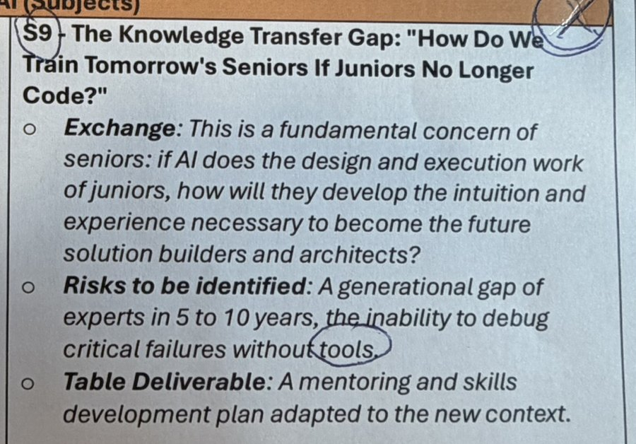
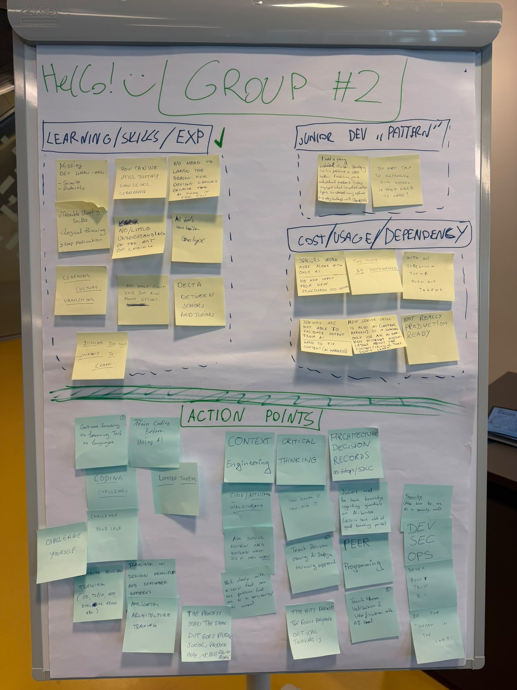
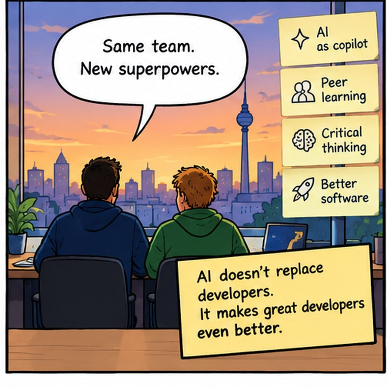

“How do we train tomorrow’s seniors
if juniors no longer code?”


A missing generation of experts in 5 to 10 years.
Earn the shortcut
Seniors stay in the loop
The new core skill

Same team. New superpowers.
AI does not replace developers. It makes great developers even better.